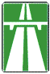

знак 5.1
Приложение 1 (дорожные знаки)
Закон Грузии «О дорожном движении» № 1830-რს, консолидированная редакция 25.06.2026 (Matsne, публикация 36). Юридическую силу имеет грузинский текст, русский — перевод. Источник: Matsne (рус.), Matsne (груз.).

Текст (рус., дословно)
5.1. «Автомагистраль» – автомагистраль, на которую действуют требования норм, регулирующих движения на автомагистралях. Знак устанавливается в начале автомагистрали или поблизости от нее в сочетании с табличкой 8.1.1.
Официальный текст (груз.)
5.1. „ავტომაგისტრალი“ − ავტომაგისტრალი, რომელზედაც მოქმედებს ავტომაგისტრალზე მოძრაობის მომწესრიგებელი ნორმების მოთხოვნები. ნიშანი იდგმება ავტომაგისტრალის დასაწყისში ან მის სიახლოვეს 8.1.1 დაფით.
Где это в курсе
Уроки
Билеты, которые на неё ссылаются (7)
№ 257 № 336 № 378 № 379 № 768 № 770 № 785
По ссылкам на закон в пояснениях базы (с учётом наших уточнений онтологии).
Ссылаются в законе
Постоянная ссылка: norm/sign-5.1.html